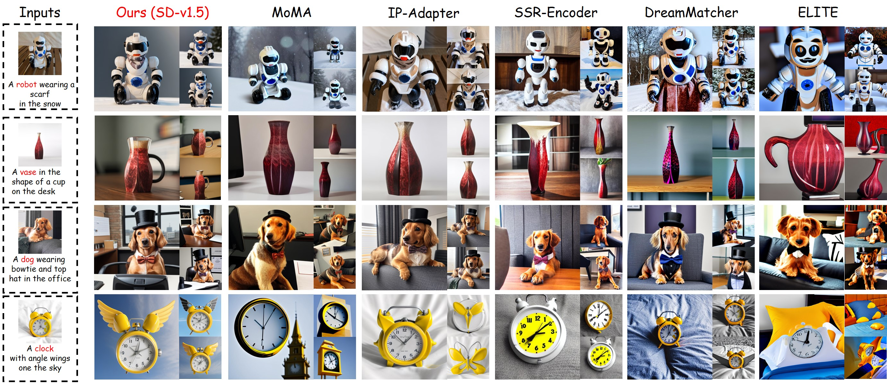
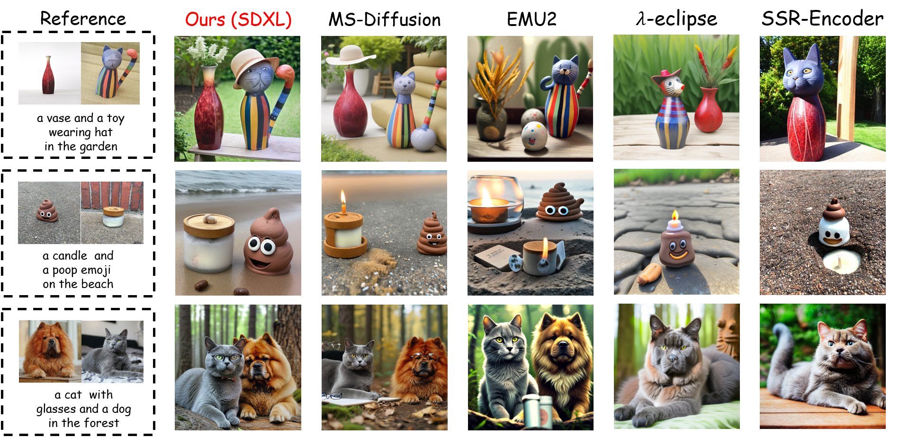
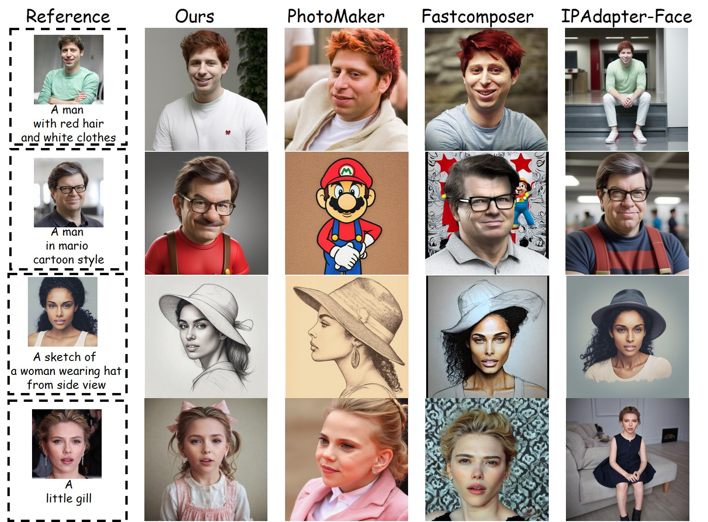
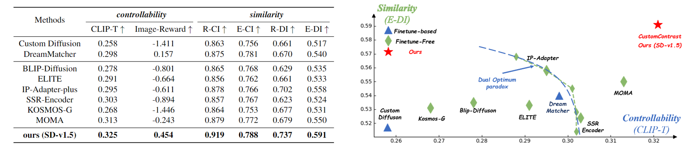

Subject-driven text-to-image (T2I) customization has drawn significant interest in academia and industry. This task enables pre-trained models to generate novel images based on unique subjects. Existing studies adopt a self-reconstructive perspective, focusing on capturing all details of a single image, which will misconstrue the specific image's irrelevant attributes (e.g., view, pose, and background) as the subject intrinsic attributes. This misconstruction leads to both overfitting or underfitting of irrelevant and intrinsic attributes of the subject, i.e., these attributes are over-represented or under-represented simultaneously, causing a trade-off between similarity and controllability. In this study, we argue an ideal subject representation can be achieved by a cross-differential perspective, i.e., decoupling subject intrinsic attributes from irrelevant attributes via contrastive learning, which allows the model to focus more on intrinsic attributes through intra-consistency (features of the same subject are spatially closer) and inter-distinctiveness (features of different subjects have distinguished differences). Specifically, we propose CustomContrast, a novel framework, which includes a Multilevel Contrastive Learning (MCL) paradigm and a Multimodal Feature Injection (MFI) Encoder. The MCL paradigm is used to extract intrinsic features of subjects from high-level semantics to low-level appearance through crossmodal semantic contrastive learning and multiscale appearance contrastive learning. To facilitate contrastive learning, we introduce the MFI encoder to capture cross-modal representations. Extensive experiments show the effectiveness of CustomContrast in subject similarity and text controllability.
Core Idea: we propose a cross-differential perspective, i.e., comparing differences between target
samples via contrastive learning, which aims to capture each subject's accurate representation from irrelevant representation (e.g., view, pose, and background).
This perspective achieves intra-consistency and inter-distinctiveness. Firstly, Intra-consistency is achieved by pulling images of the
same subject under different contexts closer, decoupling irrelevant attributes. Secondly,
Inter-distinctiveness is ensured by comparing the specific subject with others, thereby further learning the
fine-grained intrinsic features. These allow the model to focus more on the intrinsic subject attributes
than redundant attributes.
MFI-Encoder:
The Multimodal Feature Injection (MFI) Encoder is designed to extract multimodal features (textual and image
features) to support the implementation of multilevel contrastive learning, which consists of three main components: Visual-Qformer, Textual-Qformer, and the TV Fusion Module.
Visual-Qformer and Textual-Qformer are used to extract visual and textual embeddings. The TV Fusion module uses textual embeddings
as queries to capture text-related visual embeddings.
Multilevel Contrastive Learning Paradigm:
The Multilevel Contrastive Learning (MCL) paradigm includes CSCL, aligning high-level semantics by contrasting visual and textual embeddings via CLS tokens, and MACL,
which is applied to text embeddings from different cross-attention layers. MACL decouples redundant subject features by aligning positive samples
(segmented images of the same subject from various views, positions, and sizes), while preserving relative
distances by contrasting with other subjects.
Qualitative comparison with existing methods. CustomContrast decouples intrinsic features from redundant features, enabling flexible text control over complex pose e.g., the cat toy in the first row and shape (e.g., cat driving car in the fourth row) transformations. In contrast, other methods underperform due to the influence of coupled redundant features.
Qualitative results with existing methods on SD-v1.5. Compared to previous models based on SD-v1.5, our method excels in text editability and individual similarity. It performs well even with complex shape (e.g., turning a vase into a cup in the second row) and accessorization modification (e.g., clock with angle wings in the fourth row), where other models underperform.
To further demonstrate CustomContrast's capabilities in complex editing, we present qualitative results in multi-object. Our model can preserve the multiple subject similarities while achieving superior editing capabilities (e.g., only the cat toy wears a hat in the first row; only the cat wears glasses in the third row).
Qualitative comparison of human domain generation with existing methods. Compared with previous work, our model achieves more accurate style transformations (e.g., the second row) and viewpoint changes (e.g., the third row) while preserving ID similarity. This indicates that our model has learned intrinsic ID features and successfully disentangled redundant features.
